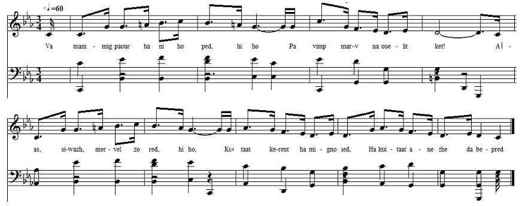
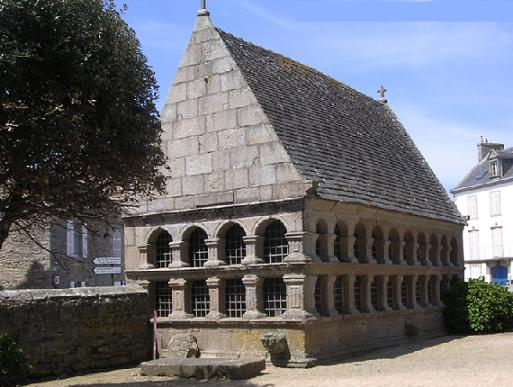

VA MAMMIG PAOUR
MA PAUVRE MERE
MY POOR MOTHER
Chant noté par La Villemarqué
Dans le 1er carnet de Keransquer (non publié)
Mélodie
"Kan ar vezhinerien"
|
Une version vannetaise de ce chant a été publiée par l'Abbé François Cadic dans la "Paroisse Bretonne de Paris" en novembre 1901 sous le titre "Après la mort" (incipit: Hag ar lerc'h me marw). Ni La Villemarqué, ni l'Abbé Cadic ne donnent la mélodie. L'Abbé indique cependant la présence de syllabes explétives, "hi ho", après le premier et le quatrième vers qui permettent de reconstituer un rythme possible pour la mélodie. Je me suis inspiré ici de la mélodie qui accompagne le chant moderne "Ar vezhinerien" (Les goémoniers) de Denez Abernot. La Villemarqué a intitulé son texte "Fragments". J'ai essayé de restituer les parties manquantes à partir de la version de l'Abbé Cadic (italiques). |
A Vannes dialect version of this song was published by the Rev. François Cadic, in "Paroisse Bretonne de Paris" in November 1901, titled "After my death" (first line: "Hag ar lerc'h me marw). Neither La Villemarqué nor the Rev. Cadic give a tune for this song. However François Cadic inserts an expletive "hi ho"s after the first and fourth line allowing to figure out a possible rhythm for the missing tune. I derived the present one from the tune to which the modern song by Denis Abernot, "Ar vezhinerien" (The wrack collectors), is sung. La Villemarqué has titled his text "Fragments". Based on Abbé Cadic's version I tried to add the lacking verses (in italics). |
|
BRETON (Version KLT) page 54 1. Va mammig paour ha ni ho ped, hi ho Pa vimp marv na ouelit ket! Alas, siwazh, mervel zo red, Kuitaat kerent ha mignoned hi ho Ha kuitaat anezhe da bepred. 2. Da toul an nor pa zeu 'r marv, hi ho Jom kalon den en ur c'hrenañ, Goût piv ayo gant ar marv. Siwazh, alas, mervel zo red, hi ho Ha kuitaat ivez bobañs ar bed. 3. An eolioù sakr eus an nouenn, hi ho Ar c'hrusifi en ho kerc'henn, An torchenn plouz dindan ho penn Al liñser wenn ha pemp plankenn, hi ho An akuitamañt eus ar bed-mañ. 4. Ar re nesañ, ar re hor kar hi ho Evit hor kas beteg an douar Ar breudeur hag ar c'hoarezed Vit ho kas beteg ar vered, hi ho En douar da vreiniñ e viot kaset. 5. E viot kaset beteg ar bez hi ho Ken e viot taolet er garnel, Espozet d'er glav, d'an avel Espozet d'er glav, d'an avel, hi ho Espozet d'ar glav ha d'an avel.[1] 6. Neuze vimp kaset c'hoazh d'an douar arre Ken zeuy mision pe jubile Aze chomimp evit jamez Neuze vimp kaset c'hoazh d'an douar arre Kenavo, bremañ er baradoez! [2] Transcription KLT: Christian Souchon |
FRANCAIS page 54 1. Ma mère, écoutez votre fils, hi ho Et ne pleurez point s'il trépasse! Il nous faut mourir, c'est ainsi, Quitter nos parents, nos amis, hi ho A tout jamais, de guerre lasse. 2. Quand on sent la mort survenir, hi ho Notre cur est saisi d'angoisse, Camarde, qui viens-tu quérir? Adieu, puisqu'il me faut mourir hi ho A ce monde où je me prélasse! 3. L'huile de l'extrême-onction, hi ho Et la croix que sur nous on penche, Sous nos têtes le polochon Seront nos derniers compagnons hi ho Avec le linceul, les cinq planches. 4. Ceux que nous portions dans nos curs hi ho Sont là pour nous conduire en terre Nos frères ainsi que nos surs, Pour pourrir, nous feront l'honneur hi ho De nous conduire au cimetière. 5. Dans la tombe allons maintenant hi ho, Plus tard nous irons à l'ossuaire, Exposés à la pluie, au vent, La pluie qui nettoie en coulant, hi ho Tandis que le vent nous aère. [1] 6. Lors de missions, de jubilés hi ho Sous la terre jonchée de feuilles Nous pourrons un jour retourner Jusqu'à ce que le Dieu parfait hi ho. Dans son Paradis nous accueille. [2] Traduction: Christian Souchon (c) 2014 |
ENGLISH page 54 1. Dear mother I entreat you, hi ho Before you do, if we should die, Don't cry, since all of us have to. Our kith and kin tell us adieu. hi ho They too once will be kissed good-bye. 2. When death looms up before our door, hi ho Our poor hearts are oppressed with scare: We wonder whom death now looks for. Leave mundane joys for evermore hi ho Since death is everybody's share! 3. After the storm, will come the calm, hi ho The pad of straw supports your head The cross lies over your joined palms, The Extreme-Unction is your balm, hi ho The five boards will be your last bed. 4. Your dearest friends, people you love, hi ho Your siblings all, to push the cart, They will rush up, be sure thereof, To allow you in earth to rot, hi ho When they carry you to churchyard. 5. First you'll be buried in a grave hi ho Then to the ossuary be borne, Where the rain and the wind will crave The slightest piece of flesh and save hi ho Only the hardest bits of bone. [1] 6. Some day to earth you will return hi ho If a mission or jubilee Decide so. Yet the place you yearn For, the reward you want to earn, hi ho Paradise is your earnest plea! [2] Translated by Christian Souchon (c) 2014 |
Notes
|
[1] Ossuaires: En 1836, dans ses "Notes tirées d'un voyage dans l'ouest de la France", l'Inspecteur général des monuments historiques, Prosper Mérimée, faisait des ossuaires bretons un tableau peu ragoûtant: ""Il est impossible d'imaginer rien de plus repoussant que ce monceau d'ossements blanchis, jetés pêle-mêle au milieu des orties qui poussent toujours en abondance dans les reliquaires. Bien souvent un zèle empressé n'attend pas l'entier dépouillement du squelette et les lambeaux de chairs puantes attirent les chiens que personne ne prend soin de chasser. D'ailleurs, ces ossuaires n'inspirent aux paysans ni dégoût ni respect. J'en ai vu plusieurs s'y abriter de la pluie, d'autres y manger; quelques-uns attendaient que j'eusse passé pour y faire l'amour avec leurs maîtresses." [2] La fascination des Bretons pour l'autre-monde fait l'objet de développements dans nos commentaires à propos du Chant des Trépassés |
[1] Ossuaries: In 1836, in his "Record of a trip through Western France", the General Inspector of Historical Monuments, Prosper Mérimée, writes about the Breton ossuaries in a less positive way: "One might hardly think of anything more repulsive than these bleached bones, anyhow heaped up amidst nettles that thrive as a rule in these relic shrines. Very often hurried zeal does not allow the skeletons to be completely stripped from stinking shreds of flesh over which dogs fight and no one makes attempts to drive them away. Besides the ossuary inspires in the peasants, neither repulsion, nor respect. I often saw it used as shelter against the rain, or as luncheon place, if not as recess for couples who waited till I went, to resume their love-making." [2] The Bretons' fascination for the otherworld is addressed in the comments to the song All Souls' Hymn |

Ossuaire de Roscoff (16 siècle)